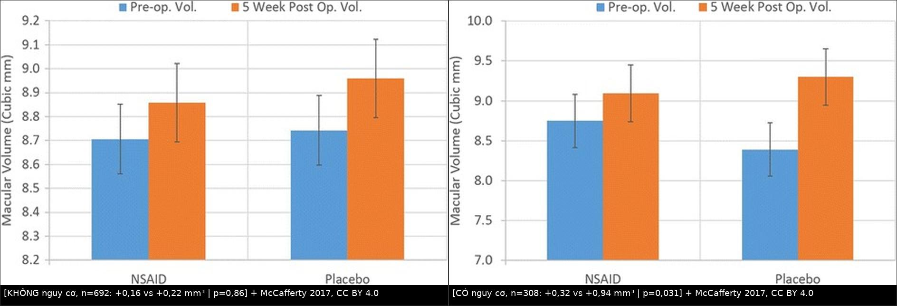
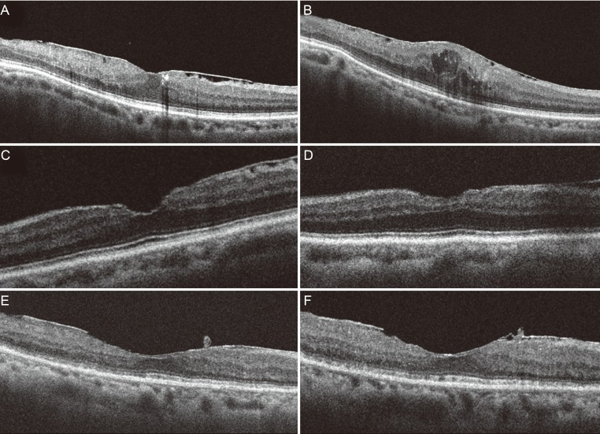
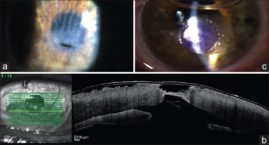

1478 — Dự phòng phù hoàng điểm sau phaco bằng NSAID tại chỗ: ai cần, dùng bao lâu, và giá phải trả / Topical NSAID prophylaxis of pseudophakic cystoid macular edema
Tags: pattern:phu-hoang-diem pattern:nang-hoang-diem vung:hoang-diem vung:the-thuy-tinh vung:giac-mac protocol:OCT protocol:phaco protocol:NSAID score:CST
Mức chắc chắn (certainty): tổng hợp y văn (literature synthesis) — ghép 1 tổng quan hệ thống Cochrane 34 RCT, > 5.000 người (PMC6464900), 2 nhánh RCT ESCRS PREMED (914 người không ĐTĐ; 213 người ĐTĐ — JCRS 2018), 1 RCT mù đôi 1.000 mắt (PMC5319126, CC BY 4.0), 1 nghiên cứu 1.325 mắt phaco liên tiếp (PMC13588649, CC BY 4.0), 1 nghiên cứu 226 mắt (PMC13521450, CC BY 4.0), 1 đoàn hệ hồi cứu 1.349 ca / 81 mắt có ERM (PMC5636715, CC BY-NC 3.0) và 1 ca tan giác mạc nguyên văn (PMC8772489, CC BY-NC-SA 4.0). Bài không có RCT nào so sánh trực tiếp các thời gian dùng khác nhau — đây là điểm phản biện trung tâm.
Câu chốt: NSAID tại chỗ làm giảm phù hoàng điểm sau phaco trên OCT (RR 0,40; KTC 95% 0,32–0,49; 3.638 mắt/21 nghiên cứu), nhưng bằng chứng về cải thiện THỊ LỰC chỉ ở mức thấp (RR 0,41 cho "thị lực kém do phù"; 1.360 mắt/5 nghiên cứu). Lợi ích tập trung ở mắt có yếu tố nguy cơ: trong 1.000 mắt RCT, phù hoàng điểm 8,77% (có nguy cơ, n = 308) so với 2,17% (không nguy cơ, n = 692), và NSAID chỉ khác placebo ở nhóm có nguy cơ (p = 0,031) chứ không ở nhóm không nguy cơ (p = 0,86) (PMC5319126). Vì vậy bài này dạy chọn người, không dạy "kê NSAID cho mọi ca phaco"; và dạy hai bẫy: NSAID không thay thế corticoid, và NSAID có thể làm tan giác mạc.
1. Tổng quan bệnh học – cơ chế hình ảnh: vì sao phaco làm rò huyết tương vào hoàng điểm, và vì sao NSAID chặn được
1.1 Chuỗi sự kiện từ dao mổ đến nang hoàng điểm
- Khởi phát: phẫu thuật (siêu âm nhũ tương hóa, tưới hút, IOL) làm vỡ hàng rào máu–thủy dịch và tạo stress cơ học–viêm ở mống mắt, thể mi và bao sau. Phospholipase A2 giải phóng acid arachidonic từ màng tế bào.
- Ngã ba cyclooxygenase: COX-1/COX-2 biến acid arachidonic thành prostaglandin E2, F2α, PGI2. Chính các PG này giãn mạch, tăng tính thấm mao mạch quanh hố trung tâm và mở junction nội mô → vỡ hàng rào máu–võng mạc trong (inner blood–retinal barrier, BRB).
- Dịch đi đâu: huyết tương thoát vào lớp plexiform trong (OPL) và lớp hạch trong (INL) — nơi mô lỏng nhất và là "khung" của tế bào Müller → tạo khoang nang (cystoid spaces). Khi dịch vượt biểu mô sắc tố → dịch dưới võng mạc (subretinal fluid, SRF).
- Vì sao muộn 4–12 tuần: nồng độ trung gian viêm tiền phòng đạt đỉnh vài tuần sau mổ; phù có ý nghĩa thị lực đỉnh quanh 5 tuần (dẫn từ PMC5319126), ca thực tế trung vị 2 tuần khi chỉ dùng NSAID và 2 tháng khi có yếu tố nguy cơ viêm (PMC13588649). Cửa sổ cần cảnh giác: 1 tuần – 8 tháng.
- Vì sao OCT thấy nang: nước giảm hồi âm (hyporeflective); nang nằm giữa các cột Müller ở INL/OPL, khi lớn tạo vách mỏng. Đo độ dày trung tâm hoàng điểm (central subfield thickness, CST, µm) để theo dõi — không dùng "độ dày võng mạc" chung chung.
- Vì sao NSAID chặn được: ức chế COX → giảm tổng hợp PG → giữ junction nội mô và giảm rò. Đây là cơ chế khác với corticoid (ức chế phospholipase A2 và các yếu tố phiên mã viêm). Vì hai cơ chế bổ sung nhau, "NSAID thay corticoid" là kết luận sai về dược lý — và đúng là sai trên lâm sàng (mục 4.2, PREMED 1).
1.2 Các con số phải nhớ
- Tần suất phù hoàng điểm sau phaco không biến chứng: 2,0% (27 mắt/1.325 mắt; 22 bệnh nhân) khi chẩn đoán bằng OCT có triệu chứng (PMC13588649); phù có ý nghĩa thị lực 0,6–3,6% với đỉnh ~5 tuần; phù trên chụp mạch huỳnh quang (FA) 9,1–25,5% — nghĩa là phần lớn phù là dưới lâm sàng (dẫn trong PMC5319126).
- Hiệu quả dự phòng (Cochrane 2016, PMC6464900): phù hoàng điểm lúc 3 tháng RR 0,40 (0,32–0,49), 3.638 mắt/21 nghiên cứu; "thị lực kém do phù" RR 0,41 (0,23–0,76), 1.360 mắt/5 nghiên cứu; chất lượng bằng chứng thấp (nguy cơ sai lệch + xuất bản). CST lúc 3 tháng không nhất quán (I² = 87%; dao động −30,9 µm nghiêng NSAID đến +7,44 µm nghiêng corticoid).
- NSAID đơn thuần so với corticoid đơn thuần (Cochrane): phù hoàng điểm RR 0,27 (0,18–0,41), 520 mắt/5 nghiên cứu; CST −22,64 µm (−38,86 đến −6,43), 121 mắt/2 nghiên cứu — nhưng đây là so sánh hai đơn trị, không phải "NSAID thay được corticoid trong phác đồ phối hợp".
- Ngưỡng OCT dùng trong nghiên cứu: "phù có thể (possible CME)" = CST tăng > 3 SD = ≥ 90,17 µm; "phù chắc chắn (definite)" = đổi đường viền võng mạc + có nang (PMC5636715). Ghi ngưỡng này vào báo cáo để người đọc sau so sánh được.
- Tác dụng phụ thường gặp nhất trong 34 RCT: rát/bỏng khi nhỏ thuốc; không có biến cố bất lợi nặng trong các thử nghiệm (PMC6464900) — nhưng biến cố hiếm và nặng chỉ lộ ra trong ca lâm sàng (mục 5).
2. Mẫu hình + chẩn đoán phân biệt theo nguy cơ (gamut)
Ba câu hỏi trước khi kê NSAID dự phòng: (1) mắt này có yếu tố nguy cơ nào? (2) giác mạc và bề mặt nhãn cầu có chịu được NSAID? (3) đã có corticoid trong phác đồ chưa?
2.1 Tầng nguy cơ — dùng bảng odds ratio thay vì cảm tính
Từ 1.000 mắt RCT mù đôi (PMC5319126; mỗi yếu tố phân bố đều giữa hai nhóm):
| Yếu tố nguy cơ | Tỉ lệ phù trong nhóm có yếu tố | OR (KTC 95%) |
|---|---|---|
| Phù hoàng điểm ở mắt đã mổ đối bên | 42,3% | 19,5 (18,5–20,6) |
| Bệnh võng mạc đái tháo đường | 28,4% | 13,1 (12,3–13,9) |
| Tắc tĩnh mạch võng mạc (CRVO/BRVO) | 27,3% | 12,6 (9,0–16,2) |
| Lỗ hoàng điểm | 16,7% | 7,7 (5,7–9,7) |
| Màng trước võng mạc (ERM) | 12,3% | 5,6 (4,7–6,8) |
| Có ≥ 1 yếu tố nguy cơ | 13,6% | 6,3 (4,9–7,6) |
| Dùng prostaglandin | 3,6% | 1,6 (0,1–3,2) — không phải yếu tố nguy cơ đáng kể |
| Thoái hóa hoàng điểm | 3,1% | 1,4 (0,6–1,8) |
- Hệ quả thực hành: "phù hoàng điểm mắt đối bên" và "đái tháo đường có bệnh võng mạc" là hai chỉ định mạnh nhất; prostaglandin không nằm trong danh sách (khác với định kiến phổ biến — xem bài 1882).
- ERM là yếu tố nguy cơ thật, nhưng thêm corticoid uống không giúp: 1.349 ca phaco, 81 mắt có ERM; tỉ lệ phù chắc chắn/có thể/có thể xảy ra ở nhóm ERM cao hơn toàn bộ đoàn hệ (1,26%/2,30%/4,32%; p = 0,048/0,032/0,038), trong khi steroid uống 1 tuần không khác nhóm không dùng (p = 0,694/0,603/0,625) (PMC5636715). Với ERM, NSAID tại chỗ 1 tháng là nền, không phải "thêm steroid uống".
2.2 Gamut theo hình thái OCT
- Nang INL/OPL ± SRF, không co kéo, mắt phaco không biến chứng: PCME/Irvine–Gass (bài này), CME do thuốc (PGA, EP2 agonist), CME do viêm màng bồ đào.
- Nang + màng tăng phản xạ mặt trên + mất đường viền hố trung tâm: ERM co kéo — NSAID không sửa được lực kéo; xem 1467.
- SRF đơn thuần, không nang, dấu "mỏ chim" ở RPE: CSCR — corticoid làm nặng hơn; đây là lý do phải đọc OCT trước khi "tăng corticoid vì phù".
- Nang + xuất tiết cứng + vi phình mạch/bóng mạch: phù do đái tháo đường — cần anti-VEGF, không chỉ NSAID.
- Nang + tế bào tiền phòng/mủ + khởi phát 3–7 ngày: viêm nội nhãn — cấp cứu, xem 1425.
- Nang + mảnh nhân trong tiền phòng/dịch kính: mảnh nhân tồn lưu — phải lấy mảnh, NSAID vô ích.
3. Bảng so sánh phân biệt (ma trận đối chiếu)
| Thực thể (entity) | Hình ảnh điển hình | Chốt vào (rule-in) | Chốt loại (rule-out) | Gợi ý xác nhận |
|---|---|---|---|---|
| PCME/Irvine–Gass (bài này) | OCT: nang INL/OPL ± SRF, CST tăng, không co kéo; FA: rò cánh hoa | Khởi phát 1 tuần–8 tháng sau phaco không biến chứng; có ≥ 1 yếu tố nguy cơ (bảng 2.1); đáp ứng corticoid | Có co kéo/ERM, có mủ tiền phòng, có mảnh nhân → không quy cho PCME | OCT + khám đèn khe; OCT lại 4 tuần |
| Phù do đái tháo đường | Xuất tiết cứng, vi phình mạch, bóng mạch, nang lan tỏa | ĐTĐ + bệnh võng mạc nền; phù trước mổ đã có | OCT trước mổ bình thường + phù xuất hiện sau mổ → nghi PCME | FA/OCTA; phối hợp anti-VEGF |
| ERM co kéo | Màng tăng phản xạ mặt trên, mất đường viền hố trung tâm, giả lỗ | Màng rõ, co kéo, phù tái phát dù NSAID | Không màng, không co kéo → loại | OCT; điều trị là bóc màng, không phải thuốc |
| CSCR (do corticoid) | SRF không nang, RPE gồ ghề, "mỏ chim"; FA dò điểm | SRF đơn thuần + đang dùng corticoid; nam trung niên, stress | Có nang + rò cánh hoa → CME | OCT + FA; giảm/ngừng corticoid |
| CME do prostaglandin/EP2 | Cùng hình thái nang + SRF | Bắt đầu/đổi thuốc glôcôm vài tuần–vài tháng trước; hết sau ngừng thuốc | Không liên quan thuốc + có yếu tố nguy cơ khác | Xem bài 1882 |
| Viêm nội nhãn | Nang + mủ tiền phòng, dính mống mắt, đau | Khởi phát 3–7 ngày, giảm thị lực nhanh + đau | Không tế bào tiền phòng, không đau → loại | Cấy dịch kính trước kháng sinh |
| Tan/loét giác mạc do NSAID | Mờ giác mạc vùng rìa, mỏng dần, Seidel (+); AS-OCT thấy mỏng/hở | Đang dùng NSAID + khô mắt/ĐTĐ/giác mạc nhạy cảm; khởi phát ngày 3–7 | Giác mạc trong, không mỏng → loại | Đèn khe + AS-OCT; ngừng NSAID ngay |

Cùng một thuốc, hai kết quả: ở nhóm không nguy cơ (n = 692) NSAID +0,16 mm³ so với placebo +0,22 mm³ (p = 0,86); ở nhóm có nguy cơ (n = 308) NSAID +0,32 mm³ so với placebo +0,94 mm³ (p = 0,031). Đây là lý do "dự phòng cho mọi ca" không có cơ sở. Nguồn: McCafferty 2017, BMC Ophthalmol (PMC5319126), CC BY 4.0 — ảnh ghép letterbox, nguyên bản từng ô.
Ba mức chẩn đoán trong cùng một nghiên cứu: A/B đổi đường viền + nang rõ; C/D nghi ngờ; E/F chỉ tăng CST ≥ 90,17 µm mà không có nang. Cùng một "phù" nhưng ba ngưỡng khác nhau — đọc kết quả nghiên cứu phải biết tác giả dùng ngưỡng nào. Nguồn: Kim S et al., Korean J Ophthalmol 2017 (PMC5636715), CC BY-NC 3.0 — nguyên bản, không crop.4. Protocol dự phòng + chọn thuốc, thời gian, theo dõi
4.1 Trước mổ: phân tầng, không phân tầng thì không có chỉ định
- OCT hoàng điểm nền khi có bất kỳ yếu tố ở bảng 2.1 (ĐTĐ có bệnh võng mạc, ERM, phù mắt đối bên, tắc tĩnh mạch võng mạc, lỗ hoàng điểm, viêm màng bồ đào) — vì "phù" chỉ có nghĩa khi biết CST trước mổ.
- Khám giác mạc/bề mặt nhãn cầu bắt buộc: khô mắt, hở mi, bệnh giác mạc, đái tháo đường lâu năm, bệnh tự miễn, dùng thuốc nhỏ có chất bảo quản nhiều năm. Đây là chống chỉ định tương đối của NSAID, không phải chi tiết phụ.
- Hỏi thuốc glôcôm (prostaglandin) nhưng không coi là lý do chính để kê NSAID (OR 1,6; PMC5319126).
- Ghi rõ trên bệnh án: có/không nguy cơ → có/không NSAID; thời điểm bắt đầu; ngày hẹn khám lại.
4.2 Chọn thuốc — bảng thực hành (liều theo nhãn, không theo thói quen)
| Hoạt chất | Nồng độ | Liều thường dùng | Thời gian trong bằng chứng | Ghi chú |
|---|---|---|---|---|
| Bromfenac | 0,07–0,09% | 1 giọt × 1–2 lần/ngày | 2 tuần (PREMED 1), 1 tuần (nghiên cứu 226 mắt) | Dung nạp tốt nhất trong so sánh 243 bệnh nhân (dính mắt 0% vs nepafenac 13,8%, diclofenac 10,3%; PMC6048336) |
| Nepafenac | 0,1% | 3 lần/ngày | 2–5 tuần | Có dạng 0,3% × 1 lần/ngày đã thử 5 tuần trên 1.000 mắt (PMC5319126) |
| Ketorolac | 0,5% | 4 lần/ngày | ≤ 2 tuần | Nhiều ca loét/thủng giác mạc nhất trong y văn — hạn chế ở giác mạc nhạy cảm |
| Diclofenac | 0,1% | 4 lần/ngày | ~2 tháng (PMC6048336) | Dung nạp trung bình |
- Bắt buộc phối hợp corticoid: PREMED 1 (914 người không ĐTĐ) so sánh bromfenac 0,09% × 2 tuần, dexamethasone 0,1% giảm liều, và phối hợp: CST 6 tuần 288,3 / 296,0 / 284,5 µm (p = 0,006); phù có ý nghĩa lâm sàng ≤ 12 tuần 3,6% / 5,1% / 1,5% (p = 0,043) → phối hợp tốt nhất, đơn trị kém hơn, không có "NSAID thay corticoid".
- Thời gian: bằng chứng hiện có trải 1 tuần → 5 tuần → 2 tháng mà không có RCT so sánh trực tiếp. Cochrane ghi nhận theo dõi 1–12 tháng, chất lượng bằng chứng thấp (PMC6464900). Vì vậy: chọn thời gian theo nguy cơ và theo dõi, không tuyên bố "3 tháng là chuẩn".
- Nghiên cứu ngắn nhất có kết quả: 226 mắt, bromfenac 0,1% × 1 tuần + prednisolone → phù 5,1% so với 16,2% corticoid đơn thuần (OR 0,28; 0,11–0,72; p = 0,006), mức tăng CST 13,3 ± 13,0 µm so với 27,0 ± 33,7 µm (p = 0,002) (PMC13521450). Đây là nghiên cứu hồi cứu, không phải RCT — dùng để gợi ý, không để đổi chuẩn.
- Đái tháo đường: PREMED 2 (213 bệnh nhân ĐTĐ) cho tất cả dùng bromfenac + dexamethasone; thêm triamcinolone 40 mg dưới kết mạc cuối mổ → CST thấp hơn 12,3 µm (6 tuần, p = 0,007) và 9,7 µm (12 tuần, p = 0,014), không ca nào phù trong nhóm triamcinolone; bevacizumab 1,25 mg nội nhãn không có tác dụng. Bài học: ở ĐTĐ, corticoid là mũi thứ hai, không phải tăng NSAID.
- Tính trung thực về nhãn thuốc: tại thời điểm nghiên cứu 1.000 mắt (2017), không NSAID nhỏ mắt nào có chỉ định trong nhãn để dự phòng PCME (PMC5319126) — dùng dự phòng là off-label ở nhiều nước; kiểm tra nhãn tại nơi hành nghề trước khi kê.
4.3 Thuật toán
flowchart TD
A[Phaco không biến chứng] --> B{Có yếu tố nguy cơ?}
B -->|Không| C[Corticoid tại chỗ đơn thuần: bằng chứng cho thấy thêm NSAID không khác placebo]
B -->|Có| D{Giác mạc và bề mặt nhãn cầu chịu được NSAID?}
D -->|Không: khô mắt nặng, loét/hở mi, bệnh giác mạc| E[Corticoid tại chỗ + theo dõi OCT; KHÔNG NSAID]
D -->|Có| F[NSAID tại chỗ + corticoid tại chỗ, 2-5 tuần tùy nguy cơ]
F --> G[OCT nền trước mổ, OCT lại 4-6 tuần nếu nhìn mờ]
C --> G
E --> G
G --> H{Có nang hoặc CST tăng?}
H -->|Không| I[Theo dõi 3 tháng, khám lại nếu triệu chứng]
H -->|Có| J{Có co kéo hoặc màng ERM?}
J -->|Có| K[ERM: theo dõi hoặc bóc màng; NSAID không sửa lực kéo]
J -->|Không| L[PCME: corticoid tại chỗ liều cao + NSAID; thêm triamcinolone dưới kết mạc khi ĐTĐ/kháng trị]
L --> M[OCT lại 4 tuần]
M --> N{Giảm CST và hết nang?}
N -->|Có| O[Giảm liều theo bậc, khám lại 3 tháng]
N -->|Không| P[Loại trừ ERM, CSCR, viêm nội nhãn, mảnh nhân; xem xét tiêm nội nhãn]
- Theo dõi tối thiểu: OCT lúc 4–6 tuần nếu có triệu chứng (nhìn mờ, biến dạng) — không chụp OCT định kỳ cho mọi mắt phaco.
- Cảnh báo giác mạc cho bệnh nhân: đau, cộm, chảy nước mắt, nhìn mờ tăng trong 1–2 tuần đầu → khám ngay, không tự tăng số lần nhỏ.
5. Biến thể bình thường và cạm bẫy
- "Phù OCT = phù có ý nghĩa" là sai: FA cho thấy phù 9,1–25,5% trong khi phù có ý nghĩa thị lực chỉ 0,6–3,6%. Điều trị theo triệu chứng + CST, không điều trị con số trên máy.
- "NSAID thay được corticoid": sai về dược lý và sai trên RCT — phối hợp tốt hơn đơn trị (PREMED 1: phù có ý nghĩa 1,5% so với 3,6% và 5,1%). Ngược lại, bỏ corticoid quá sớm vẫn gây nang dù đang dùng bromfenac: 14 mắt có yếu tố nguy cơ phát triển nang trung vị 2 tháng sau khi ngừng phối hợp (PMC13588649).
- "Có NSAID thì không phù": 13/27 mắt trong 1.325 ca phát triển nang khi chỉ dùng bromfenac (không corticoid), trung vị 2 tuần (PMC13588649). NSAID giảm, không xóa nguy cơ.
- "Không nguy cơ thì cũng nên dự phòng": trong 1.000 mắt RCT, nhóm không nguy cơ không khác placebo (p = 0,86 về thể tích; p = 0,31 về tỉ lệ phù). Cochrane vẫn thấy RR 0,40 chung, nhưng lợi ích tuyệt đối ở người nguy cơ thấp rất nhỏ — cần cân với chi phí, số lần nhỏ thuốc và nguy cơ giác mạc.
- Tan giác mạc là biến cố hiếm nhưng không thể bỏ qua: nữ 84 tuổi, đái tháo đường, khô mắt mạn, phaco không biến chứng; nhỏ NSAID dự phòng + corticoid/kháng sinh → tan và thủng giác mạc ngày thứ 5; đã dùng keo, màng ối, ghép xuyên, may mi mà vẫn mất thị lực, kết cục giác mạc đục + may mi bán phần (PMC8772489). Bài học: NSAID không dành cho giác mạc nhạy cảm, và triệu chứng giác mạc trong tuần đầu phải được khám, không được "chờ đỡ".
- Corticoid làm nặng CSCR bị bỏ sót: SRF không nang + OCT có "mỏ chim" → CSCR; nếu đọc là PCME rồi tăng corticoid, bệnh nặng lên. Đọc OCT trước khi kê.
- Prostaglandin không phải "tội phạm chính": OR 1,6 cho phù hoàng điểm (PMC5319126), và 4 RCT không thấy PGA làm tăng phù (xem 1882). Đừng đổi thuốc glôcôm chỉ vì lo phù hoàng điểm mà bỏ mất kiểm soát nhãn áp.
- Bẫy bằng chứng: phần lớn RCT trong Cochrane do ngành tài trợ (6 nghiên cứu công nghiệp, 7 phi công nghiệp, còn lại không báo) và không nghiên cứu nào ở nguy cơ sai lệch thấp mọi lĩnh vực — nên đọc con số RR 0,40 kèm nhãn "chất lượng thấp", đừng trình bày như chân lý.

Mắt của bệnh nhân 84 tuổi, đái tháo đường, khô mắt mạn: (a) tan giác mạc + thủng; (b) AS-OCT — màng ối và kính tiếp xúc băng, tiền phòng nông, thủng rõ; (c) keo + kính băng. Đây là giá phải trả của việc dự phòng không phân tầng. Nguồn: Ashena Z et al., J Curr Ophthalmol 2021 (PMC8772489), CC BY-NC-SA 4.0 — nguyên bản, không crop.6. Tự lượng giá — Blind Quiz
Ca 1 — Nam 72 tuổi, phaco không biến chứng 5 tuần trước, đang dùng NSAID + corticoid giảm liều; nhìn mờ. OCT có 6 ô A–F.
- Hỏi: (1) ô nào là phù chắc chắn, ô nào chỉ là tăng CST đơn thuần? (2) ngưỡng nào định nghĩa "phù có thể"? (3) bước tiếp theo?
Bấm để hiện đáp án (findings + chẩn đoán)
- A/B = phù chắc chắn (definite): đổi đường viền võng mạc + nang rõ ở INL/OPL (B còn có màng trước võng mạc mảnh).
- C/D = phù có thể (probable): nghi ngờ nang/khe, chưa đủ tiêu chuẩn.
- E/F = chỉ tăng CST: không nang; "phù có thể xảy ra (possible)" định nghĩa bằng CST tăng > 3 SD = ≥ 90,17 µm.
- Bước tiếp: khám đèn khe (tế bào tiền phòng, mảnh nhân) → nếu không có nguyên nhân khác: tăng corticoid tại chỗ + tiếp tục NSAID, OCT lại 4 tuần; đọc kỹ mặt trên võng mạc vì ERM làm phù không đáp ứng thuốc.
- Nguồn ảnh: Kim S et al., Korean J Ophthalmol 2017 (PMC5636715), CC BY-NC 3.0.
Ca 2 — Hai bệnh nhân cùng phaco, cùng bromfenac 2 tuần: một người OCT 5 tuần gần như không đổi, một người hoàng điểm dày thêm rõ. Vì sao?
- Hỏi: (1) đọc hai biểu đồ; (2) yếu tố nào tạo khác biệt? (3) có nên kê NSAID cho cả hai không?
Bấm để hiện đáp án (findings + chẩn đoán)
- Trái (không nguy cơ, n = 692): NSAID +0,16 mm³, placebo +0,22 mm³ — p = 0,86, không khác biệt.
- Phải (có nguy cơ, n = 308): NSAID +0,32 mm³, placebo +0,94 mm³ — p = 0,031, khác biệt rõ.
- Khác biệt nằm ở yếu tố nguy cơ, không ở thuốc: phù mắt đối bên (OR 19,5), bệnh võng mạc ĐTĐ (13,1), tắc tĩnh mạch võng mạc (12,6), ERM (5,6).
- Trả lời: dự phòng có chỉ định ở người có yếu tố nguy cơ; ở người không nguy cơ, thêm NSAID không được chứng minh có lợi và vẫn mang nguy cơ giác mạc.
- Nguồn: McCafferty 2017, BMC Ophthalmol (PMC5319126), CC BY 4.0.
Ca 3 — Nữ 84 tuổi, đái tháo đường 20 năm, khô mắt mạn; phaco mắt thứ hai, được kê NSAID dự phòng. Ngày thứ 5: đau, chảy nước mắt, thị lực giảm mạnh.
- Hỏi: (1) dấu hiệu trong (a) và (b)? (2) vì sao mắt này có nguy cơ cao? (3) xử trí ngay và bài học dự phòng?
Bấm để hiện đáp án (findings + chẩn đoán)
- (a) mờ đục + mỏng giác mạc trung tâm, tan giác mạc có thủng; (b) AS-OCT: thủng giác mạc, tiền phòng nông, màng ối + kính băng.
- Nguy cơ: khô mắt mạn + đái tháo đường + tuổi cao → biểu mô không lành, NSAID ức chế COX làm giảm tái biểu mô hóa và tăng hoạt tính collagenase → tan nhanh trong vài ngày.
- Xử trí: ngừng NSAID ngay, keo sinh học/màng ối/kính băng, kháng sinh, hội chẩn giác mạc; ghép xuyên khi cần — trong ca gốc vẫn để lại giác mạc đục + may mi bán phần.
- Bài học: trước khi kê NSAID phải khám bề mặt nhãn cầu; ở giác mạc nhạy cảm, chọn corticoid tại chỗ + theo dõi OCT thay vì NSAID.
- Nguồn ảnh: Ashena Z et al., J Curr Ophthalmol 2021 (PMC8772489), CC BY-NC-SA 4.0.
Bài liên quan chéo
- 1882 – Phù hoàng điểm do prostaglandin sau phaco (cùng hình thái OCT, khác cơ chế; prostaglandin không phải yếu tố nguy cơ lớn)
- 1875 – Phù hoàng điểm dai dẳng ở mắt bơm dầu (điều trị CME khi có dầu nội nhãn)
- 1467 – Màng trước võng mạc (ERM) (yếu tố nguy cơ OR 5,6 nhưng phải bóc màng, không phải thuốc)
- 1425 – Viêm nội nhãn sau tiêm nội nhãn (phân biệt "phù" với "mủ tiền phòng")
- 1873 – Bao sau đục thứ phát: YAG trên mắt bơm dầu (nguyên nhân khác của nhìn mờ sau phaco)
- 6132 – Viêm giác mạc nhiễm khuẩn liên quan kính tiếp xúc (mặt bệnh giác mạc khi bệnh nhân có kính/bề mặt nhãn cầu tổn thương)
- 400 – Tổng quan Mắt & thị giác
Ảnh
images/composite_the-tich-hoang-diem-theo-nguy-co.jpg— ảnh ghép từ PMC5319126 Fig. 1 + Fig. 2 (CC BY 4.0), tạo bằngtools/make_composite.py(letterbox, giữ aspect, dải đen attribution).images/1478_du-phong-CME_OCT_PMC5636715-Fig2-CCBYNC.jpg— PMC5636715 Fig. 2, CC BY-NC 3.0, nguyên bản.images/1478_du-phong-CME_Giac-mac-melt_PMC8772489-Fig1-CCBYNCSA.jpg— PMC8772489 Fig. 1, CC BY-NC-SA 4.0, nguyên bản.- Không dùng ảnh Radiopaedia/AuntMinnie/EyeWiki/Retina Image Bank. Chi tiết giấy phép từng file:
images/CREDITS.md.
Không dùng để chẩn đoán độc lập khi chưa có người hướng dẫn.